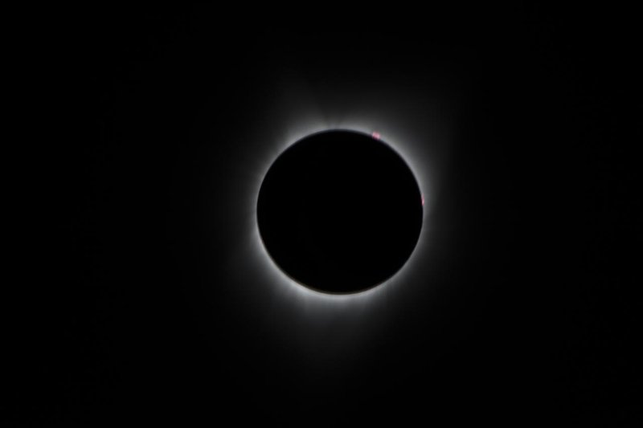

Page 3.2 ended with the Moon's longitude known within about 40′ at every new and full Moon. A new Moon at the Sun's longitude is not yet an eclipse, though: the Moon must also pass close enough to the ecliptic to cover the Sun, and a full Moon must pass close enough to it to enter the Earth's shadow.
With the Moon's latitude and the sizes of the Sun, the Moon and the Earth's shadow, the Sun of Act II and the Moon of page 3.1 tell which new and full Moons are eclipses. Built that way, the model of this page finds every eclipse of the ten years from 2021 to 2030, and gives its time within about an hour and a half. Ptolemy's model, run forward nineteen centuries, still finds all but one of them.
1 · ObservationEclipses and the Moon's latitude
To see which new and full Moons become eclipses, and how often, we take all of them over ten years of the reference sky, from 2021 to 2030. Of the 247, 38 are eclipses, 22 of the Sun and 16 of the Moon. We count a lunar eclipse only when part of the Moon enters the full shadow of the Earth, the umbra; the Moon also passes, more often, through the half-shadow around it, where it only dims slightly.
In the figure
- gold
- a solar eclipse
- red
- a lunar eclipse
- filled
- a total or annular eclipse
- open
- a partial eclipse
- grey dots
- the new and full Moons without an eclipse
The eclipses are those of the reference sky, found by the criteria of section 2 at each of its new and full Moons. They agree with NASA's list of the same ten years: the same 38 eclipses, each of the same kind (the hybrid eclipse of 20 April 2023, total along most of its path, counted as total), with its middle within two minutes of NASA's.
Every year has at least two solar eclipses, and 2029 has four, all of them partial. Lunar eclipses are fewer, and 2027 has none at all. The eclipses come in groups, the eclipse seasons, of one to three eclipses each, about 173 days apart. Two seasons take 346 days, 19 days less than a year, so each season comes 19 days earlier in the year than the season a year before.

What decides which new and full Moons are eclipses is the Moon's latitude. The Moon does not move along the ecliptic, as the Sun does, but on a path tilted against it, which takes it about 5° north of the ecliptic and 5° south each month: from 4.99° to 5.30° at the greatest, over 2021–2030. Twice a month it crosses the ecliptic, at the nodes. They are not fixed: they move westward along the ecliptic, and go round in 18.61 years.
The sky of August 2026 from Gemini to Virgo, seen looking south, with north up and east to the left, on the equatorial grid.
The Moon's path from 11 to 15 August, with a tick at the start of each day. It crosses the ecliptic near Regulus, 16 hours after it passed the Sun at the new Moon of 12 August. So close to the node, the new Moon covered the Sun: the total eclipse of that day.
In the figure
- ☉
- the Sun at the new Moon of 12 August
- ☋
- the node, where the Moon crosses the ecliptic going south
- grid
- right ascension every hour, declination every 10°
- stars
- every star brighter than magnitude 4.6; the larger, the brighter
Ptolemy reports that "the even more ancient [astronomers]", comparing lunar eclipses, found that they repeat after 6585⅓ days, in which there are "approximately 223 lunations, 239 returns in anomaly, 242 returns in latitude" (Almagest IV 2). They called it the Periodic. It was well known in Babylonian astronomy, and is called the saros today, a name Toomer notes was given to it in error (note to IV 2). Exercise 2 finds it from the three months.
2 · ModelThe Moon's inclined circle
The latitude
Ptolemy carries the Moon, with its epicycle, on a circle inclined to the ecliptic by 5° (V 12), whose nodes move westward. For the longitude alone he leaves the tilt out, since "such a small inclination has no noticeable effect on the position in longitude" (IV 6).
Let $\Omega$ be the longitude of the ascending node (☊ in the figures), where the Moon crosses the ecliptic going north, opposite the descending node ☋, and $F$ the argument of latitude, the Moon's angle along its circle from that node. To find the Moon's direction we start in the frame of its circle, where it is at $(\cos F, \sin F, 0)$, tilt the circle by the inclination $i$ about the line of nodes, and turn the line of nodes to $\Omega$, as on page 1.2:
$$\mathbf{m} = R_z(\Omega)\, R_x(i) \begin{pmatrix} \cos F \\ \sin F \\ 0 \end{pmatrix} = \begin{pmatrix} \cos\Omega\cos F - \sin\Omega\cos i\sin F \\ \sin\Omega\cos F + \cos\Omega\cos i\sin F \\ \sin i\sin F \end{pmatrix}.$$The third component is the sine of the latitude. For the longitude it is simpler to count from the node: turned back by $\Omega$, the vector is $R_z(-\Omega)\,\mathbf{m} = (\cos F,\ \cos i\sin F,\ \sin i\sin F)$, whose first two components give $\lambda - \Omega$, in the same quadrant as $F$:
For a small inclination $\beta \approx i \sin F$, within 9″ for $i = 5^\circ$. The second formula is the reduction to the equator of page 2.2, with $i$ in place of $\varepsilon$. Its greatest value, $\arcsin \tan^2(i/2)$, is 6.55′, the small effect on the longitude that Ptolemy leaves out. The model of this page leaves it out too: its longitude is the epicycle's of page 3.1.
The Moon's place on its circle is the mean place moved by the equation of anomaly of page 3.1, $F = \bar F + q$, as Ptolemy applies it (IV 9), where the mean argument of latitude $\bar F = \bar\lambda - \Omega$ grows uniformly. Its daily motion $n_F$ exceeds the mean motion $n$ in longitude, since the node moves westward at the rate $n_F - n$. The return of $F$ is the draconitic month of page 3.1, 27.21 days.
In the figure
- purple
- the Moon's circle, its inclination drawn three times larger
- red arc
- the Moon's latitude $\beta$
At a new Moon the Moon has the Sun's longitude, so its argument of latitude is $F = \lambda_\odot - \Omega$, the Sun's distance from the ascending node, to within the reduction of a few arcminutes. At a full Moon it is $\lambda_\odot + 180^\circ - \Omega$, the distance of the shadow's centre from that node. Whether a new or full Moon is an eclipse therefore depends mostly on where the Sun is relative to the line of nodes, as at the new Moon of 12 August 2026 where Figure 3 opens, a total eclipse with the Sun and the Moon together near ☋. The sizes of the next section do the rest.
The Sun moves away from a node at $n_\odot + (n_F - n) = 1.0386^\circ$ a day, its own motion plus the node's motion towards it. It comes back to the same node after the eclipse year,
$$Y_\text{e} = \frac{360^\circ}{n_\odot + n_F - n} = 346.620 \text{ days}, \qquad \frac{1}{Y_\text{e}} = \frac{1}{P_d} - \frac{1}{P_s},$$with $P_d$ the draconitic and $P_s$ the synodic month. Half an eclipse year, 173.31 days, is the interval between the eclipse seasons of section 1.
The shadow and the parallax
How close to a node the Sun must be depends on the sizes involved, as seen from the Earth's centre: the apparent radii $s$ of the Moon and $s_\odot$ of the Sun, and the horizontal parallaxes $\pi$ of the Moon and $\pi_\odot$ of the Sun, the angles under which the Earth's radius is seen from each. At its mean distance the Moon has $s = 15.5'$ and $\pi = 57.0'$; the Sun has $s_\odot = 16.0'$ and $\pi_\odot = 8.8''$.
Seen from the Earth's centre O, the Earth's radius placed at the Moon's distance subtends the angle $\pi$, and the cone narrows by $s_\odot - \pi_\odot$ over that distance, so the umbra's radius is $u = \pi - (s_\odot - \pi_\odot)$, to first order in these small angles. The Earth's atmosphere makes the shadow a little larger. NASA's eclipse tables add 1% of $\pi$, Danjon's rule, and so do we:
At the mean distances $u = 41.7'$, 2.69 times the Moon's radius. At a full Moon the Moon's centre is $|\beta|$ from the shadow's centre, so there is a lunar eclipse when the two discs overlap, $|\beta| < u + s$, and a total one when the Moon is wholly inside, $|\beta| < u - s$. The fraction of the Moon's diameter inside the umbra is the eclipse's magnitude. Strictly, what counts is the least distance of the two centres, which comes a few minutes from the full Moon. The Moon's path relative to the shadow is inclined by 5.40°, so that distance is 0.9956 of $|\beta|$; the model neglects the difference, as Fitzpatrick does (§ 7.4), while the reference sky finds the least distance.
A solar eclipse depends on where the observer is. Seen from a point on the Earth's surface rather than from its centre, the Moon is displaced by its parallax, up to $\pi$, and the Sun by $\pi_\odot$. So from some place on the Earth the Moon covers part of the Sun when
and the axis of the Moon's shadow meets the Earth, a central eclipse, when $|\beta| < \pi - \pi_\odot$. The eclipse is total if the Moon, seen from where the axis meets the Earth, is larger than the Sun, and annular if a ring of the Sun stays visible around it. At the mean distances the solar limit is 88.3′ and the lunar 57.2′.
The eclipse limits
A limit on $|\beta|$ becomes a limit on the Sun's distance from a node through $\sin\beta = \sin i \sin F$. The sizes change with the Moon's distance, from 356·400 to 406·700 km, and so do the limits: a lunar eclipse needs the Sun within 10.2° to 12.1° of a node, and a solar one within 16.4° to 18.3°. The Sun's own distance changes the limits by half an arcminute.
(a) new Moon: the Sun and the Moon
(b) full Moon: the umbra and the Moon
(c) the Moon's latitude at the new Moon, against the Sun's distance from the node
In the figure
- dashed circle
- as far as the Moon's disc can appear shifted, seen from places on the Earth: by $\pi - \pi_\odot$
- purple, dashed
- the Moon's path
- gold line
- the ecliptic
Ptolemy computes the same limits (VI 5). For the Moon at its least distance his lunar limit is 12;12° (12.20°), where the nearest Moon of this page gives 12.1°. His solar limits are lopsided, 17;41° with the Moon north of the ecliptic and only 8;22° with it south, because he takes the parallax of observers in his own part of the world, from Meroe to the mouths of the Borysthenes (the Dnieper), for whom it shifts the Moon mostly south. To test a mean new or full Moon, which can be up to 3° from the true one, he widens each limit by 3°.
The eclipse seasons
At 1.0386° a day the Sun takes between 31.5 and 35.3 days to cross the solar limits around a node, more than a synodic month, 29.53 days. At least one new Moon falls while it crosses, so every passage of the Sun by a node brings a solar eclipse, and every year at least two. When a new Moon falls near the start of the passage, the next can fall near its end, and the season has two solar eclipses, both partial, as in June and July 2029.
The lunar limits take only 19.7 to 23.4 days to cross, less than a month, so a full Moon can miss them. The season then has no lunar eclipse, as both seasons of 2027 have none.
Ptolemy reasons in the same way about the intervals between eclipses (VI 6). In six months the Moon moves 184° in latitude, a little more than half a turn, so an eclipse at one node can be followed by an eclipse at the other six months later.
In the figure
- gold
- new Moons, and the band of the solar limits
- red
- full Moons, and the band of the lunar limits
- large
- an eclipse: filled, total or annular; open, partial
- lighter
- how far the limits widen when the Moon is nearest
3 · FitThe inclination and the node
Eclipses happen only at new and full Moon, where the crank of page 3.2 moves the Moon by a few arcminutes at most, so the Moon's longitude is that of the epicycle of page 3.1, and the Sun's that of page 2.3, with its moving apogee. The latitude needs three more numbers: the inclination $i$, the motion in latitude $n_F$, and the argument of latitude at one moment, which places the nodes.
Ptolemy's parameters
Ptolemy measured the inclination with his parallactic instrument (V 12). With the Moon at its northern limit near the summer solstice, he found it always about 2⅛° from the zenith at Alexandria. The equator is 30;58° from the zenith there and the solstice 23;51° from the equator, which leaves 4.99° for the Moon's latitude, "5°" in his words.
The motion in latitude comes from a period of Hipparchus, 5458 synodic months equal to 5923 returns in latitude (IV 2), of Babylonian origin according to Toomer. With Hipparchus' month it gives a draconitic month a tenth of a second from the reference Moon's. Ptolemy changed it slightly (IV 9), from two eclipses of the same size near the same node, in 491 BC and AD 125, by too little to matter: both motions are within 0.03° a century of the reference. Two more eclipses gave him the place of the nodes at his epoch.
The sizes too come from eclipses (VI 5). In two eclipses with the Moon near the perigee of its epicycle, in 174 BC and 141 BC, 7 and 3 twelfths of its diameter were darkened, and Ptolemy's model put the Moon 0;11,47° (11.78′) farther from the shadow's centre in the second. Those 11.78′ are therefore a third of the Moon's diameter, which comes out at 35;20′ (35.33′). The second eclipse then gives the shadow's radius, 46′, a little more than "2⅗ times the moon's radius" in Ptolemy's words, close to the 2.69 of this page.
Copernicus found the motion in latitude from two eclipses at opposite nodes, Ptolemy's of 174 BC and his own of 2 June 1509, with the Moon at the same distance from the Earth and darkened on opposite sides (De Revolutionibus IV 13). Over the 1683 years between them he finds the motion in latitude 179;51° beyond whole turns, within 24′ of the reference Moon's.
The fit to 2026
The model of this page takes its motion in latitude from the reference Moon (Meeus 47), as page 3.1 took its mean motions. The inclination and the argument of latitude at J2000.0 are fitted by least squares to the latitude of the reference Moon at the 25 new and full Moons of 2026. The fit gives $i = 5.00^\circ$, Ptolemy's value, and puts the ascending node at 125.05° at J2000.0, where Meeus' mean node is at 125.04°. At the 25 moments the latitudes are within 1.9′.
The Moon's greatest latitudes, 4.99° to 5.30°, would suggest a larger inclination. With 5.145°, their mean, the latitudes at the new and full Moons of 2026, where eclipses happen, would be off by up to 10′.
For the sizes we take the modern radii of the Earth, the Moon and the Sun, and the model's own distances: the epicycle's, on a deferent at the reference Moon's mean distance of 385·000 km, and the eccentric's, whose radius is 1 au. Both vary more than the real distances, as page 3.2 found: at new and full Moon the epicycle puts the Moon between 352·500 and 417·500 km, and the eccentric puts the Sun between 0.967 and 1.034 au.
4 · TestThe model against the real eclipses
The latitude
The latitude can be judged as the longitude was, by an error curve, now of $\Delta\beta = \beta_\text{model} - \beta_\text{ref}$.
The 25 new and full Moons of 2026 were used for the fit. At every new and full Moon of 2001–2100, which were not, the latitude is still within 2.2′. Elsewhere, over the century from 1976 to 2076, the error stays within 29′, since the motions of the model are the reference Moon's mean motions.
The eclipses
We let the model find its own new and full Moons, from its Sun and its Moon, and decide at each whether there is an eclipse and of what kind. All 38 eclipses of 2021–2030 come out, each of the right kind, and no other. Over the century from 2001 to 2100, 364 of the 366 come out, 11 of them of another kind (total for annular, or the reverse, or partial for either); two partial solar eclipses are missed, and two partial lunar and one partial solar eclipse are added, all of them grazing, at the edge of the limits.
The model's new and full Moons fall typically 45 minutes (root mean square) from the middle of the real eclipse, and at worst 97 minutes. Most of this is the error in longitude of page 3.1, up to 40′ at new and full Moon, which the Moon takes about 79 minutes to cover relative to the Sun, and longer near its apogee. The rest is the Sun's error, and the middle of an eclipse, which can fall up to 17 minutes from the new or full Moon.
The table follows the four eclipses of 2026 through the model, with the magnitude of the lunar ones. Those two were among the three eclipses page 3.1 fitted its epicycle to, so their times test little.
| Eclipse of 2026 | middle (TT) | the model | magnitude |
|---|---|---|---|
| 17 February, annular solar | 12:14 | annular, 35 min early | |
| 3 March, total lunar | 11:36 | total, 4 min late | 1.15 (model 1.15) |
| 12 August, total solar | 17:47 | total, 19 min early | |
| 28 August, partial lunar | 04:14 | partial, 7 min late | 0.93 (model 0.91) |
Ptolemy's eclipses
Ptolemy's own model, with his Sun, his simple Moon and his latitude, can be judged at the three eclipses he observed at Alexandria (IV 6). As on pages 2.1 and 3.1, his days follow the Earth's rotation, and $\Delta T$ turns the reference sky's uniform time into his. His times are local apparent times, read from the sky, so the equation of time of page 2.2 converts the reference sky's into his.
| Eclipse at Alexandria | middle: Ptolemy (IV 6) | reference | his model | $\beta$: reference | his model |
|---|---|---|---|---|---|
| 6/7 May 133, total | 23:15 | 22:52 | 22:55 | $-22.9'$ | $-22.5'$ |
| 20/21 October 134, partial | 23:00 | 22:56 | 22:39 | $-30.5'$ | $-30.1'$ |
| 5/6 March 136, half the diameter | 04:00 | 03:17 | 03:43 | $-47.7'$ | $-45.4'$ |
His model's latitudes are within 2.3′ of the reference Moon's, and its times within half an hour of the real ones. Yet his Sun is 43′ to 75′ behind at these moments, and his Moon about a degree. The errors cancel in the time of the eclipse, because he fixed his Moon by eclipses, as the opposite of his own Sun.
Over the century from AD 100 to 200 his lunar limit of 15;12° marks 210 of the 1237 full Moons as possible eclipses, and the 157 real lunar eclipses are all among them. The times of his full Moons are typically within 28 minutes of the real eclipses, and at worst an hour.
In 2026 his mean argument of latitude is only 0.8° from the reference Moon's, while his mean longitude is 10° off: his motion in latitude comes from Hipparchus' period, right within 0.03° a century, while his motion in longitude inherits the drift of his Sun (page 3.1). Run forward to 2021–2030, his model finds 37 of the 38 eclipses, missing only the partial lunar eclipse of 28 October 2023, and adds four; 7 of the 37 are of another kind. Its times, though, are now wrong by up to 4.3 hours, as his Sun and his Moon drift apart.
5 · ResidualThe times, the quarters and the place
An eclipse whose middle is predicted an hour and a half off is still the same eclipse, but a lunar eclipse can then be predicted for a time when the Moon is below the observer's horizon. Such errors in the time are the largest left, and they come from the Moon's longitude, which needs the smaller inequalities that page 3.2 left out.
Away from the new and full Moons the latitude is wrong by up to 26′. The Moon's greatest latitude in 2026 is 5.23° to 5.28° when the Sun is near a node, and 4.99° to 5.04° when it is far from them. At new and full Moon the latitude follows a circle inclined by 5.0°, at the quarters one inclined by about 5.3°, as the reference Moon's term $0.17^\circ \sin(2D - F)$ requires. Like the evection, it is an effect of the Sun's pull.
The model also says only that a solar eclipse is seen somewhere on the Earth. Whether it is seen from a given city, and how much of the Sun is covered there, depends on the parallax at that place, which shifts the apparent new Moon from the true one. Ptolemy (VI 10) and Copernicus (De Revolutionibus IV 30) compute it for an observer, the harder part of the problem.
An eclipse recorded at Babylon or Alexandria happened at a moment the reference sky gives in its uniform time, while the recorded hour follows the Earth's own rotation. The difference between the two is $\Delta T$, and the old eclipse records are how it is measured before the age of telescopes (Exercise 3).
What the model still lacks, besides the smaller inequalities, is the eclipse as one observer sees it. The Sun and the Moon each have their own laws, and the eclipses are where they meet. The planets are tied to the Sun more closely: each of them loops back once in every return to the Sun, the subject of page 4.1.
Exercises
At the model's new Moon of 12 August 2026, at 17:28 TT, the Moon's argument of latitude is $F = 169.7^\circ$; the model puts the Moon at 367·193 km and the Sun at 1.027 au. With $i = 5.00^\circ$, find the Moon's latitude. Is a solar eclipse seen somewhere on the Earth? Is it central, and if so total or annular? Do the same for the next new Moon, 11 September, where $F = 199.7^\circ$ and the solar limit is 89.0′. Check the first in Figure 5, with the Sun at +10.3°: the same distance from a node, with the Moon north of the ecliptic as on 12 August.
$s = \arcsin(1737.4/d)$ and $\pi = \arcsin(6378.14/d)$ for the Moon at $d$ km; the Sun's $s_\odot$ is 959.63″ and $\pi_\odot$ 8.794″ at 1 au, inversely proportional to its distance. The shadow's axis passes $\gamma = |\beta|/(\pi - \pi_\odot)$ Earth radii from the Earth's centre.
$\beta \approx 5.00^\circ \times \sin 169.7^\circ = 0.894^\circ = 53.6'$, north of the ecliptic, 10.3° before the descending node.
At 367·193 km the Moon has $s = 16.3'$ and $\pi = 59.7'$; at 1.027 au the Sun has $s_\odot = 15.6'$ and $\pi_\odot = 8.6''$. The solar limit is $\pi - \pi_\odot + s + s_\odot = 91.4'$, more than 53.6′, so the eclipse is seen somewhere; the central limit $\pi - \pi_\odot = 59.6'$ is more than 53.6′ too, so it is central, with $\gamma = 0.899$. The axis meets the Earth $367193 - 6378\sqrt{1 - 0.899^2} \approx 364400$ km from the Moon, which is seen from there with a radius of 16.4′, more than the Sun's 15.6′: the eclipse is total. The eccentric puts the Sun too far in August (the real Sun was at 1.013 au, page 3.2); with the real distance the Sun's radius is 15.8′, and the eclipse is still total.
It was: NASA puts its greatest eclipse at 17:47 TT, 19 minutes after the model's new Moon. On 11 September, 19.7° past the node, $\beta = -101.0'$, beyond the limit of 89.0′, and there is no eclipse.
An eclipse repeats when a whole number of synodic months, which brings back the phase, is also a whole number of draconitic months, which brings back the Moon's place relative to the node. From $P_s = 29.530589$ days and $P_d = 27.212221$ days, find the shortest such periods with the continued fraction of $P_s/P_d$. Show that 223 synodic months are also very nearly a whole number of anomalistic months ($P_a = 27.554550$ days) and of eclipse years, and say what each agreement does to the repeated eclipse. Why did the ancient astronomers triple the period? How long does a series of repeated eclipses last? Hipparchus' relation of 5458 synodic months to 5923 returns in latitude (IV 2) is not among the convergents: how is it built from them?
$P_s/P_d = 1.0851958$. For the series, find how much $F$ changes in one period, and compare with the solar limit at the mean distances, 17.1°.
$P_s/P_d = 1.0851958 = [1; 11, 1, 2, 1, 4, 3, 5, \dots]$, whose convergents are 12/11, 13/12, 38/35, 51/47, 242/223, 777/716. The fraction $p/q$ means $q$ synodic months against $p$ draconitic months: 47 synodic months, 1387.94 days, miss 51 draconitic months by 2.7 hours, while 223 synodic months, 6585.321 days, miss 242 draconitic months by only 0.87 hours.
The same 6585.321 days hold 238.992 anomalistic months, 5.2 hours short of 239, so the Moon is back at the same distance and the eclipse has nearly the same size and kind. They hold 18.999 eclipse years, so the Sun is back near the same node, and the eclipse falls in the same season, 18 years and about 11 days later. The 0.321 of a day means that the Earth has turned 116° more, so the eclipse is seen a third of the way round the Earth to the west. Three periods, 19755.96 days, are almost a whole number of days. The ancient astronomers tripled the Periodic "in order to obtain a period with an integer number of days", the Exeligmos of 19756 days (IV 2), after which an eclipse also comes back to nearly the same longitude on the Earth.
Over one period $F$ changes by $-0.478^\circ$, so the Sun's place at the eclipse moves slowly across the limits. A series runs for about $2 \times 17.1 / 0.478 = 72$ periods, some 1300 years: the total eclipses of 1 August 2008 and 12 August 2026 and 23 August 2044 belong to one, and its eclipse of 3 September 2062 is only partial.
Hipparchus' 5458 months are $7 \times 716 + 2 \times 223$, and his 5923 returns $7 \times 777 + 2 \times 242$: a combination of the last two convergents, which misses by 0.72 hours, a little better than the Periodic's 0.87 hours.
In the reference sky the greatest eclipse of 20/21 October 134 came at 23:17 TT on 20 October. Find its local apparent time at Alexandria, 29.92° east of Greenwich, for an Earth that turns uniformly, with UT = TT. The equation of time was +13.4 min. Ptolemy computed the middle of the eclipse as one hour before midnight (IV 6): what value of $\Delta T = \text{TT} - \text{UT}$ does his time give? Compare it with the 9263 s of the reference sky.
Local mean time is UT plus the longitude at 4 minutes a degree; apparent time is mean time plus the equation of time. Run the same steps backwards from Ptolemy's 23:00.
With UT = TT, 23:17 plus 119.7 minutes of longitude is 01:17 local mean time, and with the equation of time 01:30 apparent time, an hour and a half after midnight: two and a half hours later than Ptolemy saw it.
Backwards from Ptolemy's 23:00 apparent time, local mean time is 22:47 and UT 20:47, so $\Delta T = 23\text{:}17 - 20\text{:}47 = 2.50$ hours. The reference sky's $\Delta T$ for that year is 9263 s, 2.57 hours, 4 minutes more: within the uncertainty of an ancient timing. Since AD 134 the Earth's rotation has fallen two and a half hours behind a uniform clock, and records like this one are how that is measured.
Sources
- Ptolemy, Almagest (transl. G. J. Toomer, 1984): IV 2 (the Periodic of 223 months and the Exeligmos, Hipparchus' 5458 months and 5923 returns in latitude, with Toomer's notes on the name saros and on the Babylonian origin); IV 6 (the inclination left out of the longitude; the eclipses of 133–136); IV 9 (the motion in latitude and its epoch, the eclipses of 491 BC and AD 125); V 12 (the inclination of 5°); VI 5 (the diameter and the shadow from the eclipses of 174 BC and 141 BC, and the eclipse limits); VI 6 (the intervals between eclipses); VI 10 (solar eclipses for an observer). Toomer's dates in negative years are astronomical: −173 is 174 BC.
- Copernicus, De Revolutionibus (transl. E. Rosen), IV 13 (the motion in latitude from the eclipses of 174 BC and 1509) and IV 30 (which new and full Moons are eclipses, and the apparent new Moon for an observer).
- R. Fitzpatrick, A Modern Almagest, § 6.3 (the latitude, $\sin\beta = \sin i \sin F$) and § 7.4–7.6 (the criteria for eclipses and their frequency).
- J. Meeus, Astronomical Algorithms (2nd ed., 1998), ch. 47 (the reference Moon: its latitude series, $F$ and the mean node) and ch. 49 (the mean new and full Moons).
- F. Espenak, NASA Goddard Space Flight Center, the decade tables of solar and lunar eclipses, 2021–2030 (eclipse.gsfc.nasa.gov, retrieved 30 October 2026), and F. Espenak and J. Meeus, Five Millennium Canon of Lunar Eclipses (NASA, 2009), for Danjon's rule; the $\Delta T$ of the reference sky is Espenak and Meeus' (NASA, 2006).
- Every number on this page:
tools/numbers/3.3-eclipses.js.